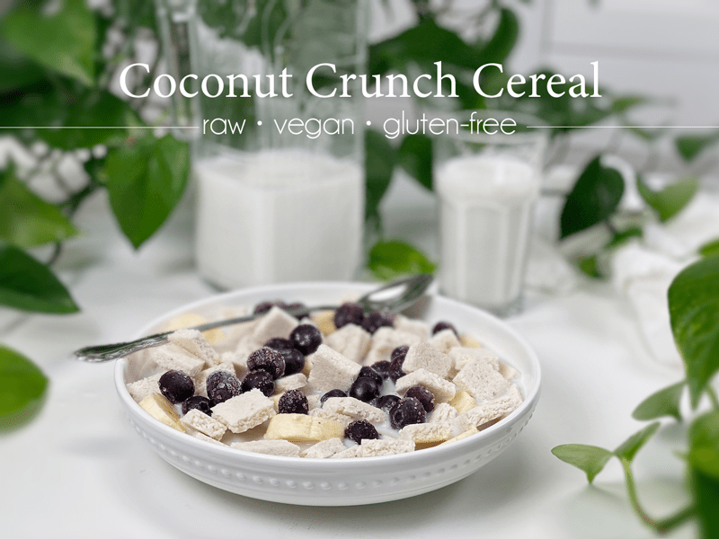
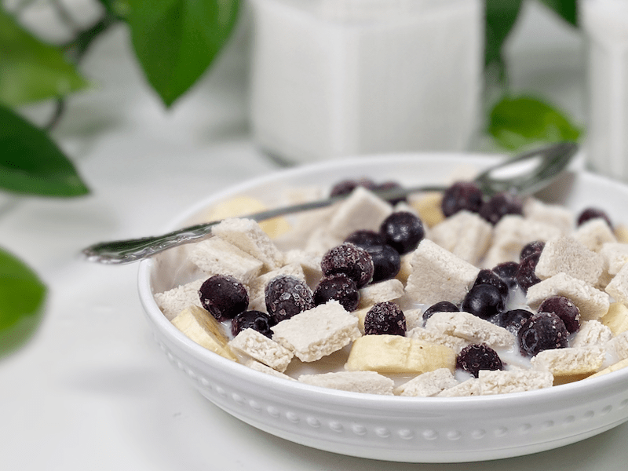
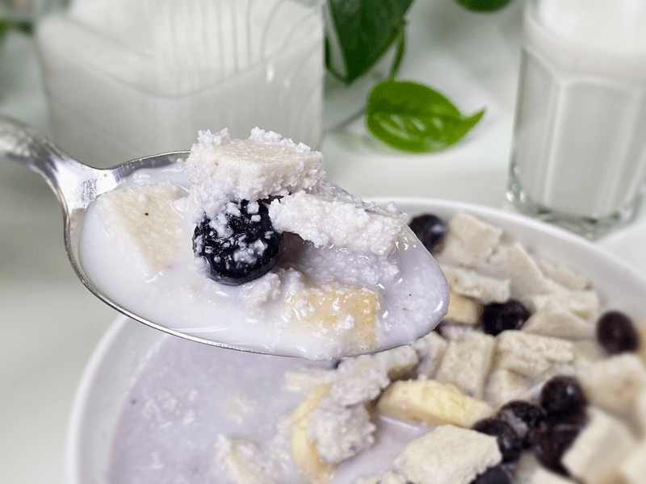

Coconut Crunch Cereal | Raw | 4 Ingredients
This slightly sweet coconut crunch cereal is made from four simple, everyday ingredients and the gentle hum of a dehydrator. It is raw, vegan, gluten-free, grain-free, and nut-free. It is a great source of digestion-friendly and satiating fiber, healthy fats, and a load of other nutrients that you can feel good about. Grab your spoon, so we can dive into this recipe!

People often ask me where my sense of inspiration comes from when creating recipes. That’s a great question and one that I don’t have a straightforward answer for. My inspiration comes from the food that I grew up on (good ole family favorites), TV commercials, magazine covers that I spy while standing in the checkout lane, browsing grocery store aisles, ingredients I have on hand… the list goes on.
And believe or not, my own site inspires me. While I am creating one recipe, I start getting ideas for the next. While I am shaping a raw bread loaf, I wonder if the same batter would work for a cracker. While rolling out crackers, I wonder if I could make a cereal from it. In the past couple of years, a lot of my inspiration has been driven by our household dietary needs. Bodies change, therefore, the foods we eat change…and my recipes often reflect that.

Speaking of inspiration, this recipe came from one of my cracker recipes. I absolutely adore the whole cereal-making process. There is something so gratifying when it comes to scoring and snapping apart those itty-bitty tiny cereal squares. This simple cereal requires only four ingredients, so let’s quickly chat about them.
Four Ingredients Only!
Fresh Pears
- Select RIPE pears for this recipe, as this will increase the sweetness without having to add more sugar.
- Unripe pears have a bland, stringy texture. They are also hard on the stomach, taking a long time for your body to properly digest them. Plus, eating too much at one time will overactivate the intestinal wall and may cause diarrhea.
- If pears are not in season or readily available, you can use apples.
Finely Shredded Coconut
- I used unsweetened dried coconut. If you only have sweetened on hand, it’s okay to use it, but you might want to omit the one tablespoon of maple syrup.
- If you don’t have finely shredded coconut, pulse it a few times in the food processor to break it down to a small crumble.
Maple Syrup & Sea Salt
- Adding the maple syrup is optional. The pears alone may be enough to naturally sweeten the cereal if they are good and ripe. I continually work on ways to reduce my sugar intake, so I found that adding the maple syrup gave me the right hint of sweetness that satisfied my ever-shrinking sweet tooth.
- The sea salt is added to help amplify the natural sugars. I don’t recommend skipping this ingredient.

Breakfast Ideas
These cereal squares can be enjoyed in several ways. Experience them in manner that tickles your taste buds and comforts your belly. I added banana slices, as well as frozen blueberries, which turned my milk a lavender color.
- Cooler Months: Add warm plant-based milk to your bowl of Coconut Crunch Cereal and watch it transform into a porridge that coats your belly in a warm hug.
- Warmer Months: Add a cold, refreshing, plant-based milk and enjoy right away for a cool and crunchy cereal.
I hope you enjoy this recipe. Please be sure to leave a comment below. blessings and love, amie sue
 Ingredients:
Ingredients:
Yields 144 cereal squares (I counted!)
- 2 cups (375 g) diced fresh pears
- 1 Tbsp (15 g) maple syrup, optional
- 1 /4 tsp (2 g) Himalayan pink salt
- 3 cups (337 g) finely shredded coconut
Preparation:
- Process the pears, sweetener (if used), and salt in a food processor, fitted with the “S” blade, until creamy.
- To avoid brown flakes in your cereal, I recommend removing the skins from the pears.
- Add shredded coconut and process until mixed.
- Line the dehydrator tray with a non-stick teflex sheet.
- Spread the batter into a large square.
- Make sure that you spread it evenly, so it dries evenly.
- Score the cereal squares into desired shapes and sizes (think bite-sized). You can use a pizza cutter or a long metal ruler to create the score marks.
- My favorite tool for this job is my pastry cutter, which you can view (here).
- Dehydrate at 145 degrees (F) for 1 hour, then reduce to 115 degrees (F) and continue drying for up to 24 hours until dry and crispy.
- Why start at 145 degrees and will the cereal still be raw? To answer your questions, click (here).
- Snap apart and let cool before storing in an airtight bag/container.
- The cereal should last several weeks in the pantry and in the freezer for 2-3 months. If the squares start to soften due to humidity, throw them back in the dehydrator to crisp up.
© AmieSue.com